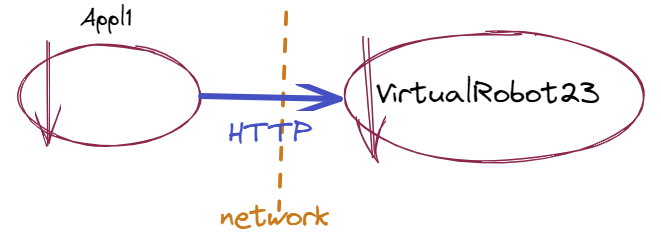
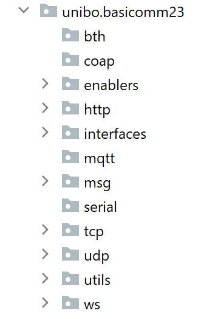
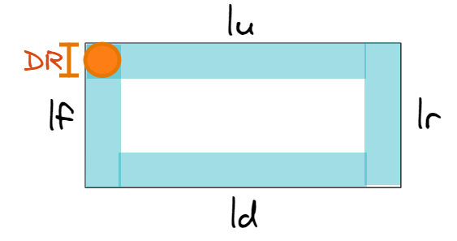

Appl1-HTTPSprint1¶
Dopo l’Appl1: Analisi del problema è stata defnita l’Appl1: Architettura logica del sistema, che in questo sprint si riduce a:
{kind=link}
Overview di Appl1-HTTPSprint1¶
In questo Sprint, affrontiamo il core problem dell’applicazione, di cui è responsabile il componente Appl1, seguendo deliberatamante un approccio:
Requisito SPRINT1: il core problem¶
Il VirtualRobot deve percorrere (una volta) il bordo perimetrale della stanza rappresentata ne La scena di WEnv.
Il requisito impone una fase proattiva, in cui il robot percorre il perimetro della stanza senza gestire i comandi stop/resume. In questa sezione, procederemo come segue.
1] Fase iniziale
Seguiamo un ‘convenzionale’ impulso immediato alla codifica decomponendo il codice in diverse funzioni, per definire azioni con precise responsabilità: unibo.http.FlatApplication1HTTPNoStop.
Definiamo la funzione requestSynch che ha la responsabilità di interagire con il robot via HTTP, restituendo l’esito del movimento.
Impostiamo una prima procedura di Testing automatizzato: TestFlatApplication1Nostop (poco soddisfacente, ma utile per delineare la problematica generale).
2] Analizziamo criticamente il lavoro svolto e introduciamo qualche cambiamento:
Teniamo memoria delle azioni riusabili (come requestSynch) in un oggetto-utility: unibo.basicomm23.http.HTTPCommApache.
Superiamo la dipendenza diretta dal linguaggio cril definendo ad operazioni ad alto livello (unibo.common.IVrobotMoves) per muovere un robot. Oltre alle solite operazioni, includiamo una nuova mossa: lo step.
Introduciamo un supporto che realizza le operazioni IVrobotMoves per VirtualRobot23 usando l’utlity VrobotHLMovesHTTPApache).
Esprimiamo il risultato dello SPRINT1: unibo.http.Appl1HTTPSprint1, che introduce una esplicita fase di configurazione del sistema.
Discutiamo una possibile Strategia di testing per BoundaryWalk. Sfruttando la nuova mossa step, definiremo la test-unit TestAppl1HTTPSprint1 che include anche la possibilità di controllare che il robot sia in HOME (funzione checkRobotAtHome).
Un esempio da non imitare¶
In prima battuta, il progetto sembra consistere essenzialmente nell’utilizzare una qualche libreria Java per
inviare comandi via HTTP al VirtualRobot23.
Proviamo a seguire subito questo impulso immediato alla codifica, riservandoci poi, se fosse il caso, di migliorare la struttura del prodotto, con opportuna opera di code-refactoring.
Il titolo della sezione indica che questo approccio sarebbe da evitare, a favore di una più approfondita (e ‘formalizzata’) fase di analisi e progettazione (ricordiamo il nostro motto).
unibo.http.FlatApplication1HTTPNoStop¶
Partendo dal più semplice modo di Interazione sincrona basato su HTTP, risolviamo il problema inviando al robot un comando di movimento in avanti per un tempo abbastanza lungo a garantire una collisione con la parete di fronte. Dopo la collisione inviamo un comando di rotazione a sinistra e ripetiamo il tutto 4 volte.
Naturalmente questo non è l’unico modo di procedere. Il lettore è invitato (come analista e/o come progettista) a individuare alternatve.
In ogni caso, per evitare la scrittura di lunghe stringhe di codice, introduciano una classe di comodo che definisce alcuni comandi-base per il robot:
unibo.common.VrobotMsgs¶
public class VrobotMsgs {
public final static String turnrightcmd =
"{\"robotmove\":\"turnRight\" , \"time\": \"300\"}";
public final static String turnleftcmd =
"{\"robotmove\":\"turnLeft\" , \"time\": \"400\"}";
public final static String haltcmd =
"{\"robotmove\":\"alarm\" , \"time\": \"10\"}";
public final static String stepcmd =
"{\"robotmove\":\"moveForward\" , \"time\": \"350\"}";
public final static String forwardcmd =
"{\"robotmove\":\"moveForward\" , \"time\": TIME}";
public final static String backwardcmd =
"{\"robotmove\":\"moveBackward\" , \"time\": TIME}";
public final static String forwardlongcmd =
"{\"robotmove\":\"moveForward\" , \"time\": \"2300\"}";
}
Lo schema risolutivo può essere espresso decomponendo le azioni in funzioni con precise, singole responsabilità (stiamo applicando alle funzioni il dei principi SOLID per gli oggetti).
FlatApplication1NoStop walkAtBoundary¶
public class FlatApplication1HTTPNoStop {
private final String localHostName = "localhost";
private final int port = 8090;
private JSONParser simpleparser = new JSONParser();
private final String URL = "http://"+localHostName+":"+port+"/api/move";
private int Nedges = 0; //For testing
private CloseableHttpClient httpclient = org.apache.http.impl.client.HttpClients.createDefault();
//Procedura responsabile della business logic
public void walkAtBoundary() {
for( int i=1; i<=4;i++) {
walkAheadUntilCollision(i);
requestSynch(URL, VrobotMsgs.turnleftcmd); //discard result
Nedges++; //For testing
}
}
//Procedura responsabile del movimento in avanti, con collisione
private void walkAheadUntilCollision(int n) {
String cmd = VrobotMsgs.forwardlongcmd;
JSONObject result = requestSynch( URL, cmd );
if( ! result.toString().contains("collision") ) {
CommUtils.outred("Flatal error: no collision");
}
}
public int getNedges(){ //For testing
return Nedges;
}
La variabile Nedges (e metodo correlato getNedges) non nasce da esigenze applicative, ma dalla necessità di avere informazioni utili per il testing (si veda TestFlatApplication1Nostop).
La funzione requestSynch ha la responsabilità di interagire con il robot con Interazione sincrona via HTTP, restituendo l’esito del movimento.
requestSynch¶
La procedura requestSynch nasce dall’intento di liberare il codice della business logic dai dettagli della interazione via HTTP. Per rendere la procedura più generale, viene fornito in ingresso l’URL del destinatario.
protected JSONObject requestSynch( String URL, String crilCmd ) {
JSONObject jsonEndmove = null;
try {
StringEntity entity = new StringEntity(crilCmd);
HttpUriRequest httppost = RequestBuilder.post()
.setUri(new URI(URL))
.setHeader("Content-Type", "application/json")
.setHeader("Accept", "application/json")
.setEntity(entity)
.build();
CloseableHttpResponse response = httpclient.execute(httppost);
String jsonStr = EntityUtils.toString( response.getEntity() );
jsonEndmove = (JSONObject) simpleparser.parse(jsonStr);
} catch(Exception e){ ... }
return jsonEndmove;
}
TestFlatApplication1Nostop¶
Impostiamo anche una procedura automatizzata di User Acceptance Test, anche se non adeguata.
public class TestFlatApplication1HTTPNostop {
protected FlatApplication1HTTPNoStop appl;
@Before
public void init() {
initSystem();
}
protected void initSystem() {
//Il robot deve essere in HOME !
appl = new FlatApplication1HTTPNoStop();
}
@Test
public void testWorkDone(){
appl.walkAtBoundary();
assert( appl.getNedges() == 4 ); //NON adeguato
}
}
Verificare implica conosecere¶
Ci rendiamo conto che sorge una nuova problematica:
Riprenderemo questo problema più avanti, nella sezione Strategia di testing per BoundaryWalk.
Una prima osservazione critica¶
La procedura requestSynch non ha nulla a che fare con la logica del problema da risolvere; essa rappresenta una funzionalità che dovrebbe essere progettata, sviluppata, testata e resa disponibile (deployed) in una infrastruttura di supporto alle comunicazioni, liberando l’applicazion-designer da compiti di questo tipo.
Procediamo dunque a un primo refactoring del codice, cercando di incapsulare questa procedura entro un oggetto che possa essere riusato anche in altre applicazioni.
Progetto unibo.basicomm23: anticipazione¶
Una volta intrapresa la direzione di creare supporti riusabili per le comunicazioni, conviene accumulare questi sforzi progettuali e realizzativi in un progetto ad hoc.
All’interno del team di lavoro, questo compito potrebbe essere svolto da uno dei nostri system-designer.
Per accumulare conoscenze ed utilità ‘sistemistiche’, noi introduciamo il progetto unibo.basicomm23, che includerà supporti di tipo generale per un insieme di protocolli definito come segue:
unibo.basicomm23.msg.ProtocolType¶
public enum ProtocolType {
http, ws, tcp, udp, coap, mqtt, bluetooth, serial
}
Il progetto è organizzato in un insieme di packages come quello mostrato nell figura che segue:
 Nel package
utilsviene definita la classe CommUtils in cui inseriremo vari metodi static di uso comune, tra cui:
delay: per sospendere l’esecuzione del Thred corrente
outxxx, conxxx=blue,red,grenn,yellow, ...per visualizzare messaggi colorati suSystem.out, una feature che risultà utile per differenzare le informazioni emesse dai diversi componenti delle nostre applicazioni
unibo.basicomm23.http.HTTPCommApache¶
La classe HTTPCommApache rappresenta un primo passo verso la creazione di una infrastruttura di
supporto alle comunicazioni.
public class HTTPCommApache {
private final CloseableHttpClient httpclient = HttpClients.createDefault();
private final JSONParser simpleparser = new JSONParser();
private String URL;
public HTTPCommApache(String url) {
URL = "http://" +url;
}
public JSONObject requestSynch( String msg ) {
JSONObject jsonEndmove = null;
try {
....
} catch(Exception e){...}
return jsonEndmove;
}
}
Nel nome della classe compare il termine Apache per enfatizzare che essa fa uso della libreria
org.apache.http, mentre in futuri progetti (come unibo.comm23) faremo uso di altre librerie,
come com.squareup.okhttp3.
Comunicazioni di alto livello col robot¶
La classe unibo.basicomm23.http.HTTPCommApache si occupa di interazioni low-level HTTP di tipo generale.
Tuttavia, da un punto di vosta logico, la nostra attenzione è rivolta alla comunicazione con il robot, che conviene sia caratterizzata da concetti di più alto livello, quali le operazioni definite dalla seguente interfaccia:
unibo.common.IVrobotMoves¶
public interface IVrobotMoves {
public boolean step(int time) throws Exception;
public void turnLeft() throws Exception;
public void turnRight() throws Exception;
public void forward( int time ) throws Exception;
public void backward( int time ) throws Exception;
public void halt() throws Exception;
}
La classe unibo.supports.VrobotHLMovesHTTPApache fornisce il supporto alle comunicazioni con il VirtualRobot23, in relazione alle operazioni definite nell’interfaccia unibo.common.IVrobotMoves.
Ovviamente, questo ulteriore livello non non viene incluso nel progetto unibo.basicomm23, in quanto specifio per la nostra applicazione corrente.
step¶
Notiamo che, rispetto ai Comandi-base per il robot in cril, in IVrobotMoves compare la nuova operazione step, che:
muove in avanti il robot per un tempo dato, restituendo il boolean
truese il movimento termina con successo efalsenel caso il movimento non possa essere completato, per via di una collisione.
unibo.supports.VrobotHLMovesHTTPApache¶
La classe di supporto alle comunicazioni di alto livello con il robot si avvale, al momento, di una istanza di HTTPCommApache per inviare comandi via HTTP.
public class VrobotHLMovesHTTPApache implements IVrobotMoves{
private HTTPCommApache httpSupport ;
public VrobotHLMovesHTTPApache(HTTPCommApache httpSupport) {
this.httpSupport = httpSupport;
}
//Implementazione delle operazioni di IVrobotMoves
...
}
La realizzazione delle operazioni IVrobotMoves è semplice, grazie anche a VrobotMsgs. Ad esempio:
@Override
public void turnLeft() throws Exception{
httpSupport.requestSynch( VrobotMsgs.turnleftcmd );
}
@Override
public void forward(int time) throws Exception{
JSONObject result = httpSupport.requestSynch(
VrobotMsgs.forwardcmd.replace("TIME",""+time));
if(result.toString().contains("collision")){
throw new CollisionException();
}
}
Si noti che è stata definita anche una nuova eccezione, che può essere sollevata dalle operazioni forward e backward:
unibo.common.CollisionException¶
public class CollisionException extends Exception{
public String getMessage(){ return "collision"; }
}
step: implementazione¶
Anche la implementazione della operazione step non risulta complicata, in quanto stiamo agendo con
Interazione sincrona e, nel caso di Collision, il comando ha comunque durata time.
@Override
public boolean step(int time) throws Exception{
String cmd = VrobotMsgs.forwardcmd.replace("TIME", ""+time);
JSONObject result = httpSupport.requestSynch( cmd );
//{"endmove":true,"move":"moveForward"} OPPURE:
//{"endmove":"false","move":"moveForward-collision"}
boolean collision = result.toString().contains("collision");
return ! collision;
}
Ora, avvalendoci di questi suppporti, possiamo impostare una soluzione al nostro core-problem che elimina dal codice molti dettagli, evidenziando solo la logica della soluzione stessa:
unibo.http.Appl1HTTPSprint1¶
public class Appl1HTTPSprint1 {
private IVrobotMoves vr ;
public Appl1HTTPSprint1(){
configure();
}
protected void configure(){
String URL = "localhost:8090/api/move";
//URL potrebbe essere letto da un file di configurazione
HTTPCommApache httpSupport = new HTTPCommApache( URL );
vr = new VrobotHLMovesHTTPApache( httpSupport );
}
...
public static void main( String[] args ) {
Appl1HTTPSprint1 appl = new Appl1HTTPSprint1();
try {
appl.walkAtBoundary(); //ENTRY POINT
}catch(Exception e){... }
}
walkAtBoundary¶
public void walkAtBoundary() throws Exception {
for( int i=1; i<=4;i++) {
walkAheadUntilCollision(i);
//walkByStepping();
vr.turnLeft();
}
}
walkAheadUntilCollision¶
private void walkAheadUntilCollision(int n) throws Exception{
try{
vr.forward(2300 );
}catch( CollisionException e){ return; }
throw new Exception("no collision");
}
}
Osserviamo che walkAtBoundary potrebbe adottare anche una strategia di movimento basata su step:
walkByStepping¶
public void walkByStepping(int n) throws Exception {
boolean goon = true;
while( goon ) {
goon = vr.step(350);
CommUtils.delay(300); //to show the steps better
}
}
Strategia di testing per BoundaryWalk¶
Ricordando il Requisito SPRINT1, il bordo perimetrale può essere definito ragionando su un .
Modello della stanza¶

Il Bordo perimetrale ha lunghezza
lf+ld+lr+lu.Poichè la stanza è rettangolare, si ha
lf==lr && ld==lu
DR=2R, essendoRil raggio del cerchio in cui può essere racchiuso il VirtualRobot
Sorge una nuova problematica:
Come conoscere la lunghezza percorsa dopo walkAheadUntilCollision.
Ma possiamo anche fare riferimento a una conosceza meno precisa, ma utile al testing: supponendo di muovere il robot per passi (walkByStepping) potremmo:
contare i passi eseguiti con successo per ogni lato del perimetro e controllare che il numero di passi su due lati oppsti sia uguale.
walkByStepping che conta i passi¶
private int[] boundarySteps = {0, 0, 0, 0}; //For testing
public void walkByStepping(int n) throws Exception {
boolean goon = true;
while( goon ) {
goon = vr.step(350);
if( goon ) boundarySteps[n]++;
CommUtils.delay(300); //to show the steps better
}
}
public int[] getBoundarySteps(){ //for testig
return boundarySteps;
}
checkRobotAtHome¶
L’uso della mossa step aiuta anche a scrivere codice per verificare che il robot sia nello stato iniziale (come proposto da Matteo Giri).
public boolean checkRobotAtHome() {
try {
vr.turnRight();
boolean res = vr.step(200);
if (res) return false;
vr.turnRight();
res = vr.step(200);
if (res) return false;
vr.turnLeft();
vr.turnLeft();
return true;
} catch (Exception e) {
return false;
}
}
TestAppl1HTTPSprint1¶
public class TestAppl1HTTPSprint1 {
protected Appl1HTTPSprint1 appl;
@Before
public void initSystem(){
appl = new Appl1HTTPSprint1();
int[] bsteps = appl.getBoundarySteps();
assert( bsteps[0] == 0 && bsteps[1] == 0 && bsteps[2] == 0 && bsteps[3] == 0 );
}
@Test
public void testBoundary(){
try {
appl.walkAtBoundary();
int[] bsteps = appl.getBoundarySteps();
assert(appl.checkRobotAtHome());
assert( bsteps[0] == bsteps[2] && bsteps[1] == bsteps[3] );
} catch (Exception e) {
fail("testBoundary");
}
}
}
Passiamo ora a Appl1-HTTPSprint2.